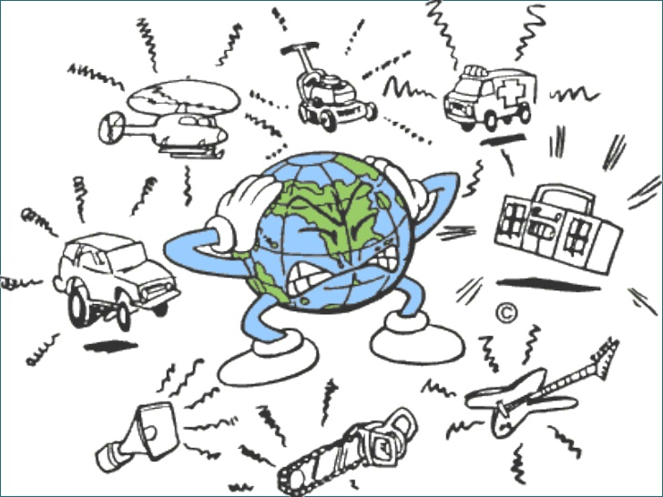

Se denomina contaminación ambiental a la presencia de componentes nocivos (ya sean químicos, físicos o biológicos) en el medio ambiente (entorno natural y artificial), que supongan un perjuicio para los seres vivos que lo habitan, incluyendo a los seres humanos. La contaminación ambiental está originada principalmente por causas derivadas de la actividad humana, como la emisión a la atmósfera de gases de efecto invernadero o la explotación desmedida de los recursos naturales.


Existen distiendos tipos de contaminación algunos de ellos son:
Provocada por la filtración de sustancias en el suelo, genera alteraciones físicas y químicas en éste que hacen que por ejemplo resulte inhabitable, se contaminen las aguas subterráneas o se imposibilite el crecimiento de vida en el área.


La contaminación del aire es una mezcla de partículas sólidas y gases en el aire. Las emisiones de los automóviles, los compuestos químicos de las fábricas, el polvo, el polen y las esporas de moho pueden estar suspendidas como partículas. El ozono, un gas, es un componente fundamental de la contaminación del aire en las ciudades. Cuando el ozono forma la contaminación del aire también se denomina smog.


Se trata del efecto de la emisión y liberación en las aguas de sustancias contaminantes. Se dificulta o altera la vida y el uso normativo, haciéndola no potable. Habitualmente esta contaminación es de origen industrial. Incluye la contaminación marítima, la cual haría referencia a la contaminación de los mares y océanos por la misma causa.


Se trata de uno de los tipos de contaminación más peligrosos y agresivos con la vida. Es producida por la liberación de material radiactivo y tiene efecto en cualquier superficie. Suele derivarse de la acción humana, como el vertido de residuos o desastres en plantas de energía nuclear como el de Chernobyl.
Uno de los tipos de contaminación menos conocidos, es generado por el cambio de temperatura en el entorno o en diferentes medios debido a la actividad humana.


A pesar de que en principio el concepto pueda asemejarse al de la contaminación lumínica, en este caso se hace referencia a la alteración del medio en base a estímulos visuales que no tienen que ver con la luminosidad. Por ejemplo, se refiere a los cambios visuales que se producen en la naturaleza debido a la actividad humana.
Se trata de uno de los tipos de contaminación en la que el elemento contaminante es visual. la contaminación lumínica el elemento contaminante en sí es la emisión de luz fuera de lo que sería natural, provocando problemas como la pérdida de orientación o los cambios en los biorritmos tanto de seres humanos como de otros animales.
Denominamos contaminación acústica a la emisión de sonido en una proporción, frecuencia, tono, volumen y ritmo excesivos que provocan una alteración en el medio o en los seres que lo habitan. Este tipo de contaminación es el que viven, por ejemplo, aquellas personas que viven en barrios muy turísticos en los que hay multitud de discotecas y establecimientos con música.
